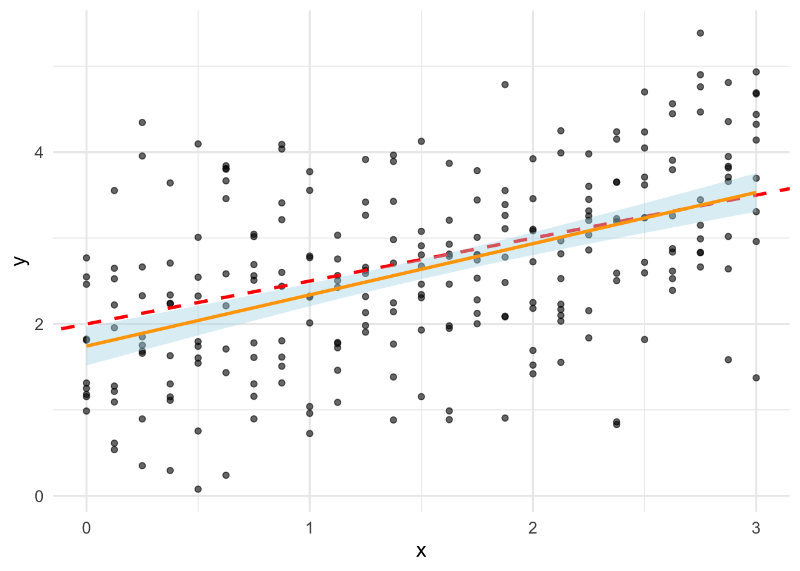

Describe real-world examples of questions that can be answered with statistical inference.
Define common population parameters (e.g., mean, proportion, standard deviation) that are often estimated using sampled data, and estimate these from a sample.
Define the following statistical sampling terms: population, sample, population parameter, point estimate, and sampling distribution.
Define bootstrapping.
Use R to create a bootstrap distribution to approximate a sampling distribution.
Statistical inference is the process of using data analysis to infer properties of an underlying probability distribution. Inferential statistical analysis infers properties of a population, for example by testing hypotheses and deriving estimates. It is assumed that the observed data set is sampled from a larger population. Inferential statistics can be contrasted with descriptive statistics. Descriptive statistics is solely concerned with properties of the observed data, and it does not rest on the assumption that the data come from a larger population.
In this lesson, we will get a feel for the inferential method. There are many details of statistics that we will leave for a later course. Further, our approach will be computational, utilizing the bootstrap resampling method.
Motivating Example
Random variables and their distributions model processes that produce data. For example, a binomial random variable with probability of success \(\pi = 0.5\) can be used to model the process of tossing a coin and observing the number of heads. This is an illustration of the domain of probability.
Statistical inference is concerned with the inverse problem: given data, what can we say about the process that produced it? For example, given a sample of coin tosses, what can we say about the probability of heads? This is an illustration of the domain of statistics.
Question: Given a coin, how can you determine if it is fair or not? Think about how you could approach answering this question.
Obviously, to address the previous question we should collect data. That is, we should toss the coin some number of times (probably very many) and record the number of heads. Then, we can use the data to estimate the probability of heads.
Question: Suppose that we toss a coin 10 times and observe 7 heads. What is your best guess for the probability of heads? Suppose that we toss a coin 100 times and observe 70 heads. What is your best guess for the probability of heads?
At this point, there are a few things to take note of:
When we do statistical inference, we are often trying to estimate a parameter(s) of a distribution. The parameter(s) should be viewed as fixed but with unknown values. In this case, we call the parameter or parameters a population parameter. In the coin example, the population parameter is the probability of heads, \(\pi\).
We have some process to estimate the population parameter. This process inputs observed data and returns an estimated value for the parameter(s). In this case, we call the estimate a point estimate. In the coin example, the point estimate is the number of heads divided by the number of tosses, we denote this by \(\hat{\pi}\).
The point estimate is a random variable. That is, if we were to repeat the experiment, we would get a different point estimate. This is because the observed data is random. In this case, we call the point estimate a statistic. In the coin example, the statistic is the number of heads divided by the number of tosses, that is, \(\hat{\pi}\).
Since the point estimate is a random variable, it has a distribution. In this case, we call the distribution a sampling distribution. In the coin example, the sampling distribution is the distribution of \(\hat{\pi}\).
A key problem in statistical inference is to determine or describe the sampling distribution of a statistic. For example, we might be interested to know what is the mean and variance of the sampling distribution. The standard deviation of the sampling distribution of a statistic is called the standard error. We call the process of determining the sampling distribution statistical inference. In the coin example, we want to determine the sampling distribution of \(\hat{\pi}\).
One can use the sampling distribution of a statistic to make statements about the uncertainty of point estimates.
In mathematical statistics, there is a heavy focus on deriving closed form or asymptotically exact expressions for the sampling distribution of a statistic. This is amazing and beautiful and well worth learning. For this, we highly recommend (Wasserman 2004) or the online book Introduction to Probability for Data Science. However, this approach is beyond the scope of this course. Further, the precise formulas of mathematical statistics apply in a much too limited range of application for the purposes of modern data science.
As an alternative to mathematical statistics, one can take a computational approach. That is, use the computer to simulate the sampling distribution of a statistic. This approach is called bootstrapping. The bootstrap is a powerful tool that can be used to approximate the sampling distribution of a statistic. It is also a useful tool for hypothesis testing and obtaining confidence intervals. Even our coverage of the bootstrap will be only introductory. To learn more beyond what we cover, we recommend (Efron and Hastie 2022).
Resampling Experiment
Let’s start with a simulation. Here’s what we will do: Simulate 100 tosses of a fair coin, that is, sample from a binomial random variable with \(\pi = 0.5\), count the number of heads, then estimate \(\pi\) by dividing the number of heads by 100. Then, we will repeat this for 500 times. The code below does this and displays the results in a table.
Figure 1: 500 estimates of the probability of success, \(\pi\) from simulated data.
Question: What are your takeaways from our simulation experiment and plot in Figure 1? What, if anything, do you think we can say about the sampling distribution of \(\pi\)?
Now, let’s try a slightly different simulation. We will do a single round of tossing a fair coin 100 times. Then, we will resample from the 100 tosses with replacement 500 times. For each resample, we will count the number of heads and again estimate \(\pi\) by dividing the number of heads by 100. The code in below does this and displays the results in a table.
Figure 2: 500 estimates of the probability of success, \(\pi\) from resampled data.
Question: What are your takeaways from our simulation experiment and plot in Figure 2? How do the results compare and contrast with those of the previous simulation and plot in Figure 1?
Bootstrap
Our resampling simulation in the last section is an example of the bootstrap. Notice what we did, we took a sample from the population, then resampled from the sample. This is called resampling. The bootstrap is a special case of resampling where the resampling is done with replacement. What we did was generate a bootstrap distribution for our statistic. The idea is,
if the sample is representative of the population, then the bootstrap distribution of our statistics obtained by resampling with replacement from the sample should approximate the sampling distribution for our statistic.
While the mean of the bootstrap will be the mean of the sample and not necessarily the mean of the population, the standard deviation of the bootstrap will be a good estimate for the standard error of the statistic. Thus, the bootstrap distribution allows us to assess the uncertainty of an estimate. The power of the bootstrap technique is that it works for any statistic. For example, we can use the bootstrap to estimate the sampling distribution for the mean for a normal random variable, or parameters in models such as the coefficients in a linear regression model. We can even use the bootstrap to estimate the uncertainty in model predictions, even if the model is non-parametric.
Example: Bootstrap Mean
Let’s take \(n = 50\) samples \(X_{1},X_{2},\ldots, X_{n}\) from a normal distribution with \(\mu = 10\) and \(\sigma = 1.75\), that is, with \(X_{i} \sim \text{Norm}(\mu = 10, \sigma = 1.75 )\):
A point estimate for the mean \(\mu\) is the sample mean \(\hat{\mu}\) defined by
\[
\hat{\mu} = \frac{X_{1} + X_{2} + \cdots + X_{n}}{n}
\] Let’s compute the sample mean for our sample:
(x_bar <-mean(x))
[1] 10.20559
Now, let’s build the bootstrap distribution for the sample mean. We will do this by resampling with replacement from the sample 500 times. For each resample, we will compute the sample mean. The code below does this and displays the results.
Now, statistical theory tell us that the standard error of the sample mean is given by
\[
\text{SE}(\hat{\mu}) = \frac{\sigma}{\sqrt{n}}
\] where \(\sigma\) is the standard deviation of the population. Let’s compute the standard error of the sample mean for our sample:
(se <- sigma/sqrt(n))
[1] 0.2474874
Let’s compare this with the standard deviation of our bootstrap distribution:
sd(mean_resample_df$x_bar_b)
[1] 0.1938924
We use confidence intervals (CIs) to quantify the uncertainty in our estimates. Classically, a 95% CI for the mean is computed in R using:
Exercise: Redo what we have done in bootstrapping the mean of a sample from a normal distribution but instead bootstrap the median and estimate the standard error and a 95% CI for the statistic. You can use the fact that the function median computes the sample median. How do the results compare and contrast with those of the mean?
Example: Linear Regression
Let’s suppose that we have samples from a normal distribution but where the mean varies as a linear function of a variable \(x\). That is, we have samples from a distribution \(\text{Norm}(\beta_{0} + \beta_{1}x, \sigma)\), where \(x\) ranges over some values. This is equivalent to assuming that we have a random variable \(Y\) that satisfies
\[
Y = \beta_{0} + \beta_{1}x + \epsilon
\] and \(\epsilon \sim \text{Norm}(0,\sigma)\).
We can use the bootstrap to estimate the uncertainty in estimates for the parameters \(\beta_{0}\) and \(\beta_{1}\) in a manner similar to how we estimated the uncertainty in the sample mean in the last subsection. However, in this case, the mean is estimated by a linear regression model. That is, we have estimators \(\hat{\beta}_{0}\) and \(\hat{\beta}_{1}\), values of which are obtained by fitting a linear model to the data. Bootstrapping allows us to approximate the sampling distributions for these estimators.
First, we will simulate some data. The simulated data is shown in Figure 3. Notice that the true mean is given by \(y = 0.5 x + 2\) which appears as the red dashed line in the figure.
# sample sizeN <-25# true intercept and slope parametersbeta_0 <-2beta_1 <-0.5# x-valuesx <-seq(0, 3, length.out = N)# data simulationlm_samp <-function(x,samp_n=10,sd_val=1){# sample from a normal distribution with mean = beta_0 + beta_1*x y <-rnorm(samp_n, mean=beta_0 + beta_1*x, sd=sd_val)tibble(x=x,y=list(y))}# obtain simulated datalm_samp_df <-map_dfr(x,lm_samp)lm_samp_df_l <- lm_samp_df %>%unnest(y)# plot simulated datalm_samp_df_l %>%ggplot(aes(x=x,y=y)) +geom_point(alpha=0.6) +geom_abline(intercept=beta_0,slope=beta_1,color="red",linewidth=1,linetype="dashed") +geom_smooth(method="lm",color="orange",fill="lightblue")

Figure 3: Simulated data for simple linear regression. The true mean is given by \(y = 0.5 x + 2\)
The orange line in Figure 3 is the fitted linear model and the light blue shaded region shows the corresponding standard error computed by traditional methods.
In R, the function lm is used to fit a linear model. The code below fits a linear model to the simulated data and prints the estimated intercept and slope parameters, that is, the point estimates for \(\hat{\beta}_{0}\) and \(\hat{\beta}_{1}\) in Table 1.
Table 1: Estimated intercept and slope parameters for the linear model fit to the simulated data.
estimate
coeff
1.7423412
beta_0
0.5963686
beta_1
We would like to assess the uncertainty in our point estimates. Bootstrapping is one way to do this and the following code implements the bootstrap for our example. Figure 4 shows the bootstrap distribution for the intercept and slope parameters.
Figure 4: Bootstrap distributions for the intercept and slope parameters.
In the last line of code, we manually resampled the data and fit a linear model to each resample. The code below does the same thing but uses the function reg_intervals from the `rsample`` package to do the resampling and fitting. The results shown in Figure 5 are similar to those we saw in Figure 4.
Figure 5: Bootstrap distributions for the intercept and slope parameters. This time, the function reg_intervals is used to do the resampling and fitting.
We can also use reg_intervals to obtain the confidence intervals for each parameter estimate. The results are shown in
Table 2: Confidence intervals for the intercept and slope parameters obtained using the reg_intervals function.
term
.lower
.estimate
.upper
.alpha
.method
(Intercept)
1.5134585
1.7368193
1.9720297
0.05
percentile
x
0.4696498
0.5978922
0.7210832
0.05
percentile
Finally, we can use our bootstrapped estimates to plot the bootstrap distribution of the regression line. The results are shown in Figure 6. The orange line is the fitted linear model, the yellow shaded region shows the corresponding standard error computed by traditional methods, and the light blue lines are regression lines fitted to the resampled data. The light blue lines are the bootstrap distribution of the regression line.
Figure 6: Bootstrap distribution of the regression line for the simulated data. The true value is given by \(y = 0.5 x + 2\)
Now that you have a background in the general idea of statistical inference and the approach we will take to inference using the bootstrap, let’s work together in an RStudio project to apply our knowledge to actual data science problems.
References
Efron, Bradley, and Trevor Hastie. 2022. “Computer Age Statistical Inference.”
Timbers, Tiffany, Trevor Campbell, and Melissa Lee. 2022. Data Science: A First Introduction. CRC Press.
Wasserman, Larry. 2004. All of Statistics: A Concise Course in Statistical Inference. Vol. 26. Springer.